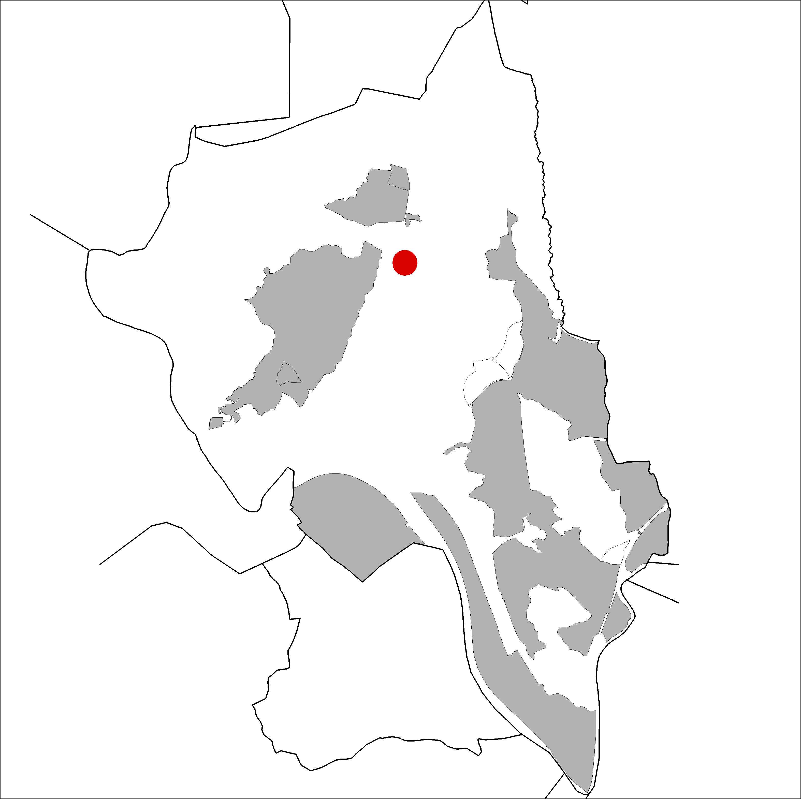

|  |
Nom de l’element: Restes al camí de la Vinya d’en Carabanchel
Clau d’identificació: C.10
Nucli o indret: Camí de la Vinya d’en Carabanchel.
UTM: X= 413.895, Y= 4.594.352.
Règim del sòl: Sòl no urbanitzable.
Egrave;poca de construcció i tipologia:
S’han trobat restes de teules i parets tombades procedents d’algun tipus d’edificació antiga als marges del camí que discorre entre Ca n’Oliveró i Can Nicolau de Baix (camí de la vinya d’en Carabanchel).
1.2. Estat de conservació:
Dolent.
1.3. Ús actual:
Patrimoni arqueològic.
1.4. Accés:
Accés fàcil des del camí que discorre entre Ca n’Oliveró i Can Nicolau de Baix.
Patrimoni arqueològic, possibles restes d’alguna antiga masia.
3.1. Usos admesos:
Patrimoni arqueològic.
3.2. Condicions d’ordenació:
3.3. Accés
Accés des del camí que discorre entre Ca n’Oliveró i Can Nicolau de Baix.
BPU (Bé Protegit Urbanísticament)